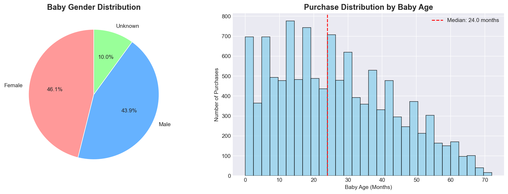
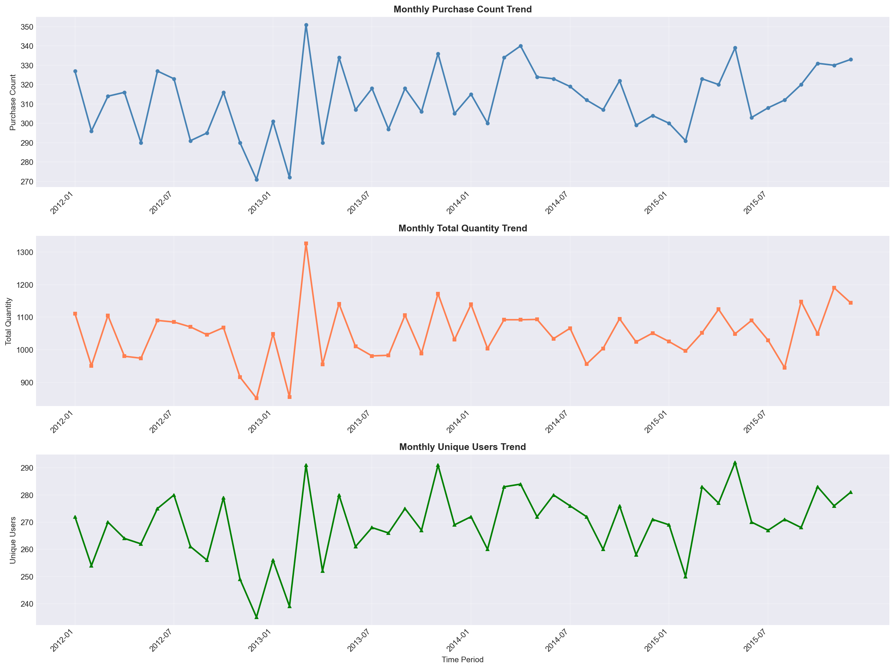

📊 淘宝母婴购物数据分析
基于天池数据集 #45 的深度分析报告 | 2026.02.24
1,000
总用户数
15,000
交易记录
50,336
总销量(件)
3.36
平均购买量
👶 用户画像分析

💡 核心洞察
- 性别分布：男女婴比例均衡（46% vs 44%），10%未填写性别
- 黄金年龄段：1-2岁是核心购买期，占49%购买量
- 消费规律：6-24个月是母婴产品消费高峰期
📦 商品分析

💡 核心洞察
- 品类竞争：前5大品类销量差异<5%，竞争均衡
- 热销品类：50014815以3,069次购买位居第一
- 订单特征：85%订单≤5件，中小订单为主
📈 时间趋势分析

💡 核心洞察
- 增长趋势：年增长率2-3%，稳定增长
- 用户粘性：用户基数稳定在970-980人，复购率高
- 季节性：无明显季节性波动，全年销售均匀
🎯 RFM客户价值分析

💡 核心洞察
- 冠军客户：14.5%（145人）- 核心收入来源，需提供VIP服务
- 流失风险：18.7%（187人）- 需要召回策略
- 忠诚客户：18.0%（180人）- 有升单潜力